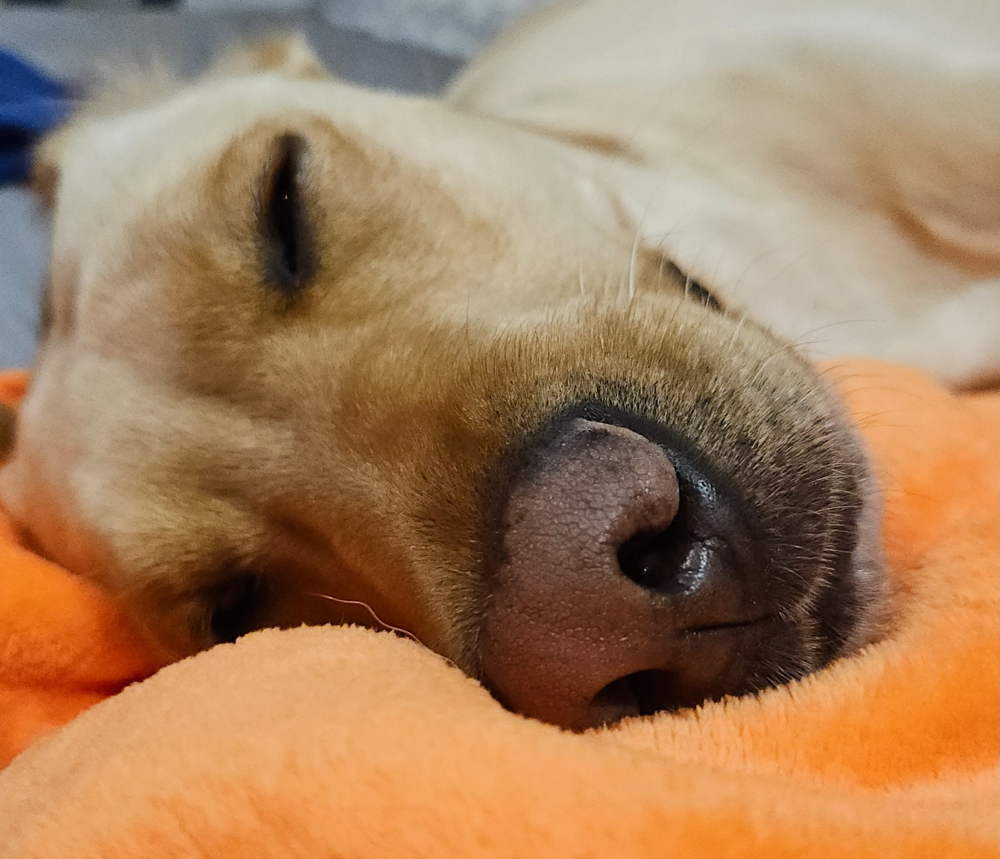

Luna's blog
Posted on by Luna
Meet Luna, the Labrador Retriever with a heart as golden as her fur! Luna is not just any dog; she’s a bundle of joy, energy, and unconditional love. Whether she’s chasing after a ball, splashing in the water, or simply lounging by your side, Luna’s presence brings warmth and happiness to every moment. In this blog, we’ll dive into the delightful world of Luna, exploring her playful antics, her loving nature, and the special bond she shares with her family. Get ready to fall in love with Luna, the Labrador who brightens every day with her wagging tail and infectious smile! 🐾✨